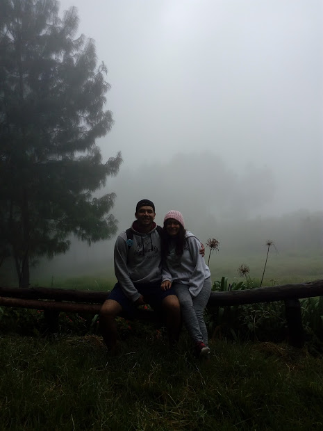
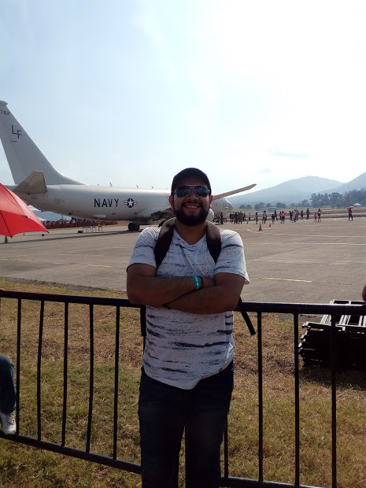

Hobbies
En mis tiempos libres no suelo pasar durmiendo, sino que intento pasar siempre activo, realizando una u otra actividad. Normalmente en mi tiempo libre suelo salir con mis amigos a jugar basketball, en otras ocasiones decidimos visitar atracciones turisticas, como piscinas, centros comerciales, playas, museos, etc. Con mi familia solemos salir de paseo a parques con zonas verdes grandes y en otras ocasiones viajamos a pueblos llenos de atracciones turisticas.
Otro de mis hobbies es el de ir al gimnasio, luego de pasar por un proceso medico en el que por problemas de peso se me veian afectadas otras zons del cuerpo, decidi rebajar y meterme de lleno al ejercicio. Tiempo despues he podido notar los cambios en mi salud, y eso me motiva a seguir con esa constancia y disciplina.
Mencionar tambien que me gusta muchisimo las aventuras de altura, visitar zonas altas y montoñasas del pais, escalarlas y si es posible acampar por noches en las zonas mas altas y frias del pais. Ese tipo de actividades suelo disfrutarlos mas, ya que son un escape momentaneo a la realidad de la ciudad, la rutina y el trabajo, por lo que disfruto al maximo esos viajes.
Ademas, quiero agregar a mi lista de hobbies o aventuras, viajar a muchos paises alrededor del mundo, conocer nuevas culturas, nuevas costumbres, idiomas, nuevos platillos tipicos de cada pais, etc. Este es una pequeña muestra de los viajes y momentos que suelo realizar como parte de mis hobbies, sea a diario o no, siempre trato de disfrutr cada uno de ellos.
 